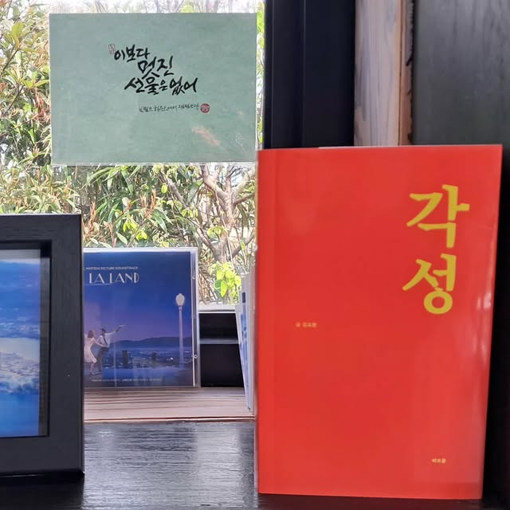
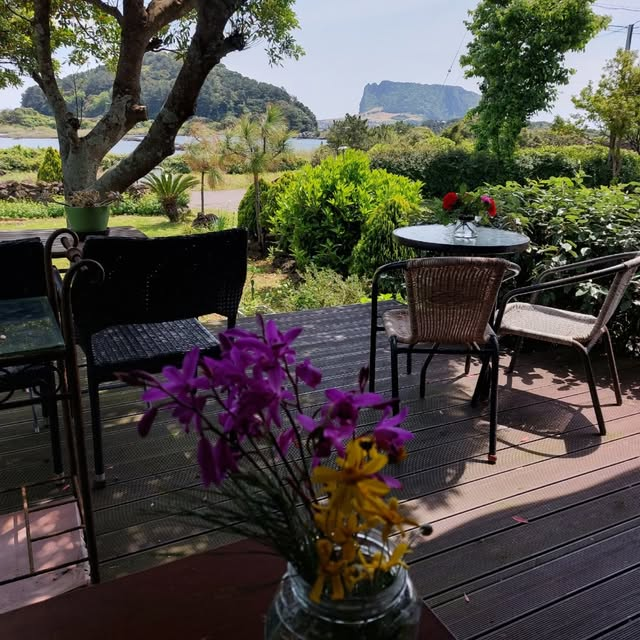
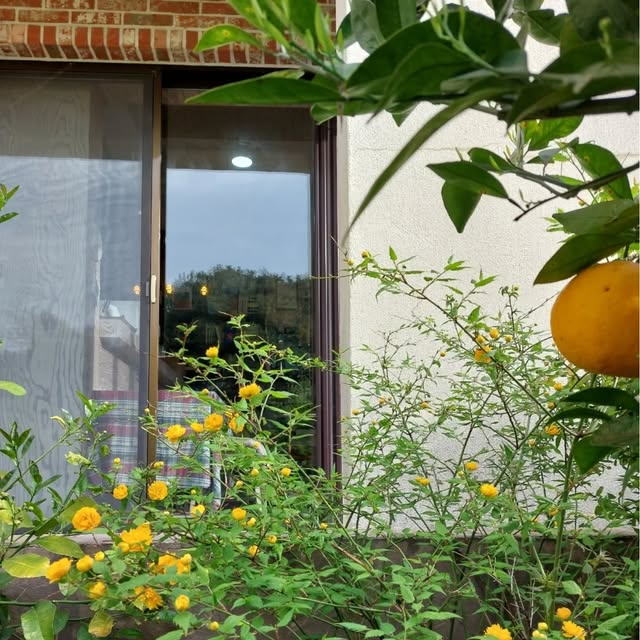
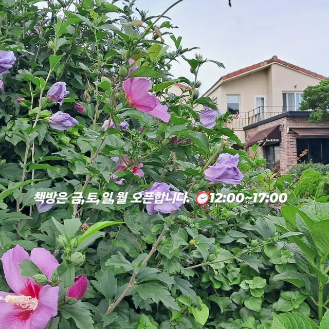
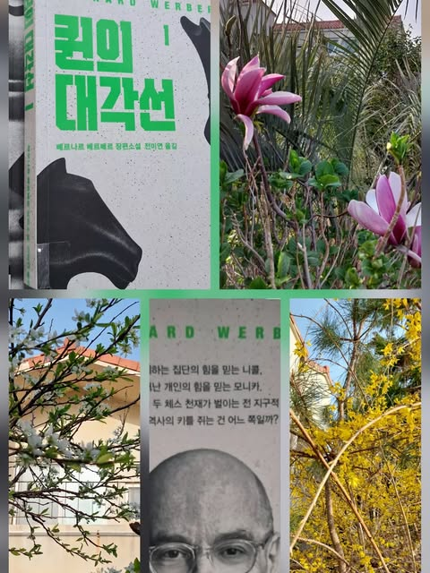
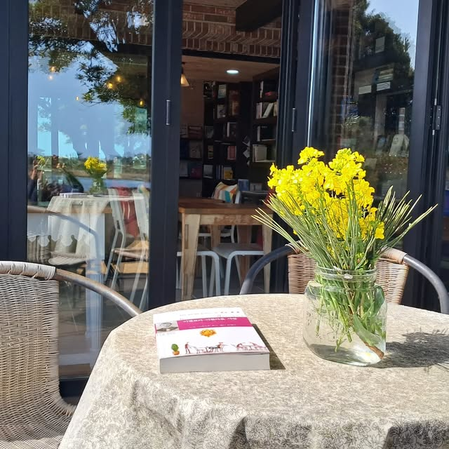

01
시간을 건너온 고전
천천히 읽을수록 오래 남는 문장들

OUR STORY
제주 동쪽, 오조리의 바람과 볕이 드는 자리에 책방이 있습니다.
고전과 그림책, 소설을 고르고 커피를 내립니다. 책을 사러 오셔도, 잠시 책장을 넘기며 쉬어가셔도 좋습니다. 바다 곁에서 각자의 속도로 머물러 주세요.
책방의 오늘 보기 ↗
INSIDE & AROUND
책이 놓인 따뜻한 실내와
바다를 향해 열린 오조리의 풍경입니다.

VISIT THE BOOKSHOP
금 · 토 · 일 · 월
12:00 — 17:00
화 · 수 · 목
제주 서귀포시 성산읍 오조로
성산일출봉을 마주한 오조리
방문 전 인스타그램에서 당일 운영 소식을 확인해 주세요.
BOOKS & COFFEE
한 번 더 펼쳐보고 싶은 책과
책 읽는 시간을 위한 커피를 준비합니다.

01
천천히 읽을수록 오래 남는 문장들

02
어른과 아이가 함께 펼치는 이야기

03
한 세계에 잠시 머무는 가장 좋은 방법
OJO JOURNAL
오조리의 볕과 바람, 그리고 책방의 작은 소식을 전합니다.